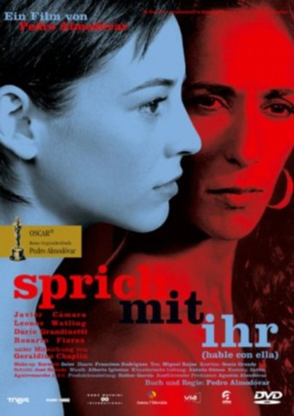

#3401 Sprich mit ihr
Alternativ: Talk to Her (Englischer Titel)
Auszeichnungen: 1 Oscars gewonnen für 1 Oscars nominiert 1 GoldenGlobes gewonnen 2 BAFTA-Awards gewonnen
 
 IMDB-Wertung: 8.0 / 10
IMDB-Wertung: 8.0 / 10  Metascore: 86
Metascore: 86 
Almodóvar erzählt die Geschichte von zwei verhinderten Lieben und scheut dabei nicht die Auseinandersetzung mit brisanten moralischen Themen. Wie bei dem spanischen Regisseur üblich, stehen auch hier die Frauen im Mittelpunkt der Handlung. Und dennoch ist es eine Männerfreundschaft, die daraus entspringt.
Jahr: 2002
Dauer: 112 Minuten
FSK: 16
Land: Spanien Studio: Tobis StudioCanalTonspuren: DD5.1 - ,
Untertitel: Englisch, Deutsch,
Auflösung: 720p (1280x550) Größe: 4833 MB
Genre: Drama, Liebe, Mystery
Regisseur: Pedro Almodóvar
Drehbuch: Pedro Almodóvar
Soundtrack: Alberto Iglesias
Darsteller:
 Javier Cámara als Benigno Martín
Javier Cámara als Benigno Martín- Darío Grandinetti als Marco Zuluaga
 Leonor Watling als Alicia
Leonor Watling als Alicia- Rosario Flores als Lydia González
- Mariola Fuentes als Rosa
 Geraldine Chaplin als Katerina Bilova
Geraldine Chaplin als Katerina Bilova- Pina Bausch als Bailarina 'Café Müller'
- Caetano Veloso als Singer at party - Cucurrucucú Paloma
- Roberto Álvarez als Doctor Vega
 Elena Anaya als Ángela
Elena Anaya als Ángela Lola Dueñas als Matilde
Lola Dueñas als Matilde- Ana Fernández als Hermana de Lydia
- Loles León als Presentadora de TV
- Fele Martínez als Alfredo
 Paz Vega als Amparo
Paz Vega als Amparo Carmen Machi als Enfermera Jefe
Carmen Machi als Enfermera Jefe- Fernando Guillén Cuervo als Doctor , uncredited
 Marisa Paredes als Invitada fiesta , uncredited
Marisa Paredes als Invitada fiesta , uncredited- Cecilia Roth als Invitada fiesta , uncredited
- Alejandro Tous als (uncredited
- Malou Airaudo als Bailarine 'Café Müller', Dancer
- Adolfo Fernández als Niño de Valencia
 Chus Lampreave als Portera
Chus Lampreave als Portera- Helio Pedregal als Padre de Alicia
- José Sancho als Agente Niño de Valencia
- Beatriz Santiago als Enfermera A
 Juan Fernández als Director Prisión
Juan Fernández als Director Prisión- Ismael Martínez als Enfermero
- Joserra Cadiñanos als Director Hospital
- Ángel Infantes als Yiyo
 Agustín Almodóvar als Cura
Agustín Almodóvar als Cura- Adela Donamaría als Recepcionista psiquiatra
- Carlos García Cambero als Cuñado de Lydia
- Esther García als Oficial
- Lola García als Recepcionista Hospital
- Sonia Grande als Madre de Alfredo
- Ben Lindbergh als Ben
- Carlos Miguel als Oficial
- Michel Ruben als Abogado
- Ana Sanz als Empleada Academia de baile
- Jean-Laurent Sasportes als Bailarín 'Café Müller'
- Nazareth Panadero als Bailarín 'Café Müller'
- Dominique Mercy als Bailarín 'Café Müller' / 'Masurca fogo'
- Michael Strecker als Bailarín 'Café Müller' / 'Masurca fogo'
- Ruth Amarante als Bailarina 'Masurca fogo'
- Aida Vainieri als Bailarina 'Masurca fogo'
- Rainer Behr als Bailarina 'Masurca fogo'
- Stephen Brinkmann als Bailarina 'Masurca fogo'
- Jorge Puerta als Bailarín 'Masurca fogo'
- Daphnis Kokkinos als Bailarín 'Masurca fogo'
Datei: X:\2002\Sprich mit ihr (2002, FSK16, 1280x550).mkv seit 01.04.2016
Festplatte: HD 1996-2002
 Es gibt insgesamt 93 Filme in der Gruppe '2002'
Es gibt insgesamt 93 Filme in der Gruppe '2002'